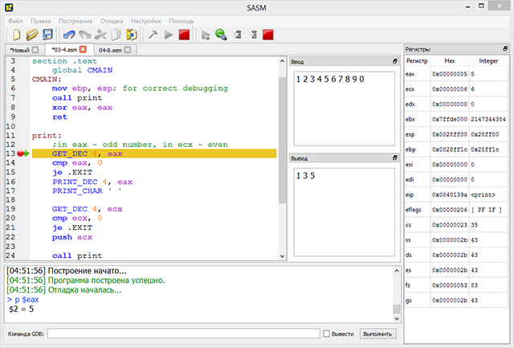

SASM
English version of site here.
SASM (SimpleASM) - простая кроссплатформенная среда разработки на языке ассемблера NASM с подсветкой синтаксиса и отладчиком. В SASM Вы можете легко разрабатывать и выполнять программы, написанные на языке ассемблера NASM. Вводите код в форму и запускайте приложение. Программа работает "из коробки" и хорошо подойдет для начинающих изучать язык ассемблера. Основана на Qt. Распространяется по свободной лицензии GNU GPL v3.0.

Загрузить для WindowsЗагрузить для Linux
Для загрузки программы на Linux выбирайте Ваш дистрибутив в окне "Build Results" справа.
Вы также можете собрать SASM из исходников, которые можно найти в GitHub репозитории.
Поддержите проект
PayPal:
WebMoney: Z282016332582 и R331674303467
Яндекс.Деньги: 410012181834380
О программе
В SASM Вы можете легко разрабатывать и выполнять программы, написанные на языке ассемблера NASM. Вводите код в форму и запускайте приложение. В Windows также возможен запуск приложения в отдельном окне. Входные данные указывайте в поле "Ввод". В поле "Вывод" Вы сможете увидеть результат работы программы. При этом все сообщения и ошибки компиляции будут выводиться в форму снизу. Вы можете сохранять исходный или скомпилированный (exe) код программы в файл, а также загружать свои программы из файла.
Программа поддерживает работу с несколькими проектами – новые файлы открываются и создаются в новых вкладках. При выходе из программы текущий набор открытых файлов сохраняется. При следующем запуске Вы сможете восстановить предыдущую сессию. В параметрах настраивается шрифт, цветовая схема и текст, отображающийся при создании нового файла. Интерфейс программы доступен на двух языках (русский и английский). Все окна в программе плавающие, с возможностью закрепления в одной из множества позиций. Имеется возможность переназначения горячих клавиш.
Стандартное меню "Правка" дополнено возможностью комментирования/раскомментирования выделенного куска кода и создания/удаления отступа в 4 пробела (Tab/Shift+Tab).
В SASM вы можете находить ошибки в своих программах с помощью интерфейса к отладчику gdb. В программе можно просматривать значения регистров и переменных, а также устанавливать точки останова и перемещаться по отлаживаемой программе. Дополнительно имеется возможность выполнять произвольные команды отладчика gdb, результаты которых будут отображаться в логе.

Библиотека макросов "io.inc"В программу включена библиотека макросов "io.inc". В ней есть кроссплатформенные команды ввода-вывода и макросы: CMAIN - точка входа и CEXTERN для доступа к внешним функциям на языке C. Подробнее о ее командах Вы можете узнать здесь или ниже.
| Имя макроса | Описание макроса |
| PRINT_UDEC size, data
PRINT_DEC size, data |
Вывод числовых данных заданных параметром data в 10-чном представлении. Параметр size – число, указывающее размерность данность в байтах; допускаются значения 1, 2, 4. В качестве параметра data может выступать числовая константа, символьная константа, имя переменной, имя регистра или адресное выражение (без спецификатора размера данных в памяти). Если задается регистр большего размера, то берется заданное параметром size количество младших разрядов. PRINT_UDEC интерпретирует число как беззнаковое, PRINT_DEC — как знаковое. |
| PRINT_HEX size, data | Аналогично предыдущему, но данные выводятся в 16-чном представлении. |
| PRINT_CHAR ch | Печатается символ, заданный параметром ch. В качестве параметра может выступать численная константа, символьная константа, имя переменной, имя регистра или адресное выражение (без спецификатора размера данных в памяти). Печатается всегда содержимое 8 младших разрядов. |
| PRINT_STRING data | Печать строки текста, оканчивающейся символом с кодом 0. В качестве параметра можно передавать строковую константу, имя переменной или адресное выражение (без спецификатора размера данных в памяти). В случае печати строковой константы, наличие символа с кодом 0 в конце строки необязательно. |
| NEWLINE | Макрос переводит печать на новую строку. |
| GET_UDEC size, data
GET_DEC size, data |
Ввод числовых данных в 10-чном представлении с клавиатуры. Размер вводимых данных ограничен параметром size, который задается числом (1, 2, 4). Введенные данные обрезаются соответствующим образом. Параметр data – либо имя переменной, либо имя регистра, либо адресное выражение (без спецификатора размера данных в памяти). Если задается регистр большего размера, то старшие разряды заполняются знаковым битом в случае GET_DEC и нулями в случае GET_UDEC. GET_UDEC считывает беззнаковое число, GET_DEC — знаковое. Запрещается использовать в качестве параметра регистр esp. |
| GET_HEX size, data | Аналогично предыдущему, но данные задаются в 16-чном представлении с префиксом 0x. |
| GET_CHAR data | Аналогично предыдущему, но происходит считывание одного символа, нажатие Enter не требуется. Более того, нажатие Enter будет расцениваться как ввод управляющих символов перевода строки: 0xD 0xA в ОС Windows, 0xA в ОС *nix. Если параметр – регистр, размер которого больше 1 байта, значение считанного символа будет дополнено нулями. |
| GET_STRING data, maxsz | Ввод последовательности символов длиной не более чем (maxsz-1). Чтение последовательности останавливается на EOF или переводе строки, причем перевод строки сохраняется в буфере. В конец считанной строки добавляется символ с кодом 0. Параметр data – либо имя переменной, либо адресное выражение (без спецификатора размера данных в памяти). Параметр maxsz – регистр или числовая константа. |
Реализация
Windows
В качестве компилятора для NASM используется nasm 2.10.05, запускаемый под включенным в программу Cygwin'ом, в качестве компоновщика - gcc 4.6.2.
Версии компиляторов и компоновщиков подобраны с учетом рекомендуемых программ для курса "Архитектура ЭВМ и язык ассемблера" ВМК МГУ 1-го потока.
Также в программу включен отладчик gdb из пакета MinGW и немного измененная для отладки библиотека макросов ввода-вывода.
Под Windows SASM после установки сразу готов к работе.
Linux
Для работы программы на Linux должны быть установлены: nasm, gcc, gdb (для отладки).
Больше информации о программе и её использовании можно получить в Wiki проекта на GitHub.
История изменений:
16.02.2014 - версия 2.2 - значительно улучшен интерфейс программы и её юзабилити, исправлено множество ошибок. Добавлены выбор цветов фона и текста, а также полная настройка подсветки синтаксиса. Окна ввода-вывода и отладки стали плавающими (docking) окнами с многочисленными вариантами их расположения. Улучшены виджеты отображения регистров и памяти (добавлены автоподгонка под текст и возможность копирования), сделана возможность запоминания их состояния. Улучшен механизм точек останова - добавлена возможность остановки на метке (на строке с кодом ниже) и возможность её установки по горячей клавише. Улучшена отладка макросов - теперь они неотличимы от обычных инструкций. К действиям добавлены иконки, сделаны тулбары. Комбинации горячих клавиш приведены в соответствие со стандартными, добавлена возможность их переназначения.
13.11.2013 - версия 2.1 - исправлено множество ошибок, исправлены проблемы совместимости - созданы установочные пакеты для многих Linux-систем на OBS, налажена совместимость с Qt 4, а также упрощена сборка из исходников. Сделано много улучшений, расширена функциональность. В частности, в отладчике - добавлены: просмотр регистров, просмотр памяти, точки останова и команда "продолжить"; улучшены: выполнение произвольных команд gdb, подсветка текущей строки, последовательный вывод во время отладки (изменены макросы io.inc). Компиляция теперь выполняется во временных папках - пропала необходимость в специальных правах при запуске программы. Добавлена отметка о несохраненном документе. Добавлен последовательный вывод в программах. Добавлено отображение статуса завершения программы. Добавлен вывод времени работы программы. Добавлен выбор шрифта. Обновлена справка. Сделана новая иконка. Еще множество минорных улучшений и исправлений.
04.06.2013 - версия 2.0 - сделаны все запланированные изменения - реализован отладчик, улучшена подсветка, стало возможно работать с несколькими файлами, SASM (новое название) полностью переписан на Qt и теперь с открытым кодом и кроссплатформен. Исходники выложены на GitHub, туда же переехал и сайт. В новом SASM нет поддержки MASM, так как он работал только на 32-битных системах Windows, плюс отладчик с ним бы не работал. Если Вам нужна версия для MASM - скачивайте 1.0.4 на предыдущем сайте.
21.04.2013 - версия 1.0.4 - исправлена ошибка с CEXTERN.
18.03.2013 - версия 1.0.3 - исправлены ошибки подсветки синтаксиса, теперь подсвечиваются все ключевые слова NASM, исправлен запуск программ на MASM.
10.03.2013 - версия 1.0.2 - исправлены ошибки, добавлено автосохранение кода и пути.
07.03.2013 - появилась первая версия программы - 1.0.0.
Пожелания и сообщения об ошибках отправляйте на адрес Dman1095@gmail.com или оставляйте на GitHub Issues.
Copyright © 2013 Дмитрий Манушин